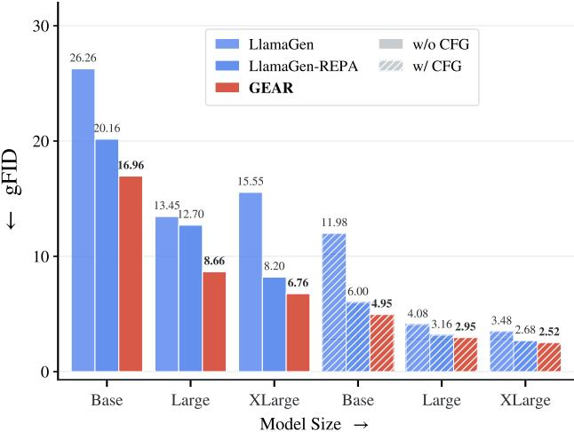

它反转了很多 diffusion-side 方案的思路：不强迫 tokenizer latent 更 DINO-like，而是让 AR 模型内部表征更语义化。
GEAR: Guided End-to-End AutoRegression for Image Synthesis Bin Lin , Zheyuan Liu , Chenguo Lin , Sixiang Chen , Yunyang Ge , Yunlong Lin , Jianwei Zhang , Miles Yang , Zhao Zhong , Liefeng Bo , Li Yuan；机构信息 arXiv 列表未稳定提供。 arXiv new; image tokenizer/autoregressive generation 原文链接
(c) GEAR (Ours) Figure 2 Overview of GEAR(c) GEAR (Ours) Figure 2 Overview of GEAR. (a) The conventional pipeline freezes a pretrained VQ-VAE and trains the AR model alone with the next-token-prediction (NTP) and REPA losses. (b) Naively making the pipeline end-to-end by passing AR gradients back into the tokenizer through the straight-through estimator (STE, drawn as the zigzag arrows <sup>⇝</sup>) is highly unstable and collapses (cf. table 7). (c) GEAR reads the per-position assignment both as a hard (one-hot) and a soft (temperature-scaled) matrix: the hard branch carries NTP and the hard REPA loss to update only the AR model, while the diferentiable soft branch carries a REPA loss that bypasses the upper AR blocks and flows back (the dashed arrow <sup>99K</sup>) to update only the tokenizer, giving a stable end-to-end guidance signal.这张图概括 GEAR 的整体方法流程。阅读时先看模块之间传递的训练信号，再看作者如何把目标拆成可优化的子问题。

(b) gFID across model sizes (w/o vs(b) gFID across model sizes (w/o vs. w/ CFG) Figure 1 GEAR accelerates and improves autoregressive image generation. (a) gFID versus training steps on ImageNet (without CFG): GEAR converges up to 10× faster than LlamaGen-REPA, whereas the naive end-to-end variant that back-propagates into the tokenizer through the straight-through estimator diverges (gFID≈105). (b) gFID across model scales at 1.5M steps: GEAR improves performance at every size (B/L/XL), both without and with CFG.这张图/表用于判断 GEAR 的实验收益来自哪里。重点看替换、消融或跨模型设置下趋势是否一致，而不是只看单个最高分。